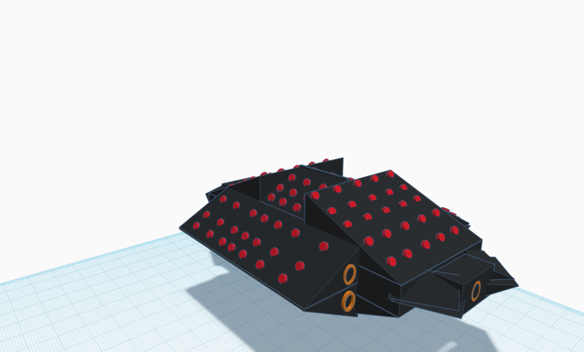

Cognitive Warfare Research & Development Group
This group began in August 2020 with the release of USD-R&E RFI-WHS-20-CYBERST: Cyber Science and Technology (S&T) Roadmap, a look at CYBER over the next 25 years. We decided to write an extremely innovative paper "A Cognitive Cyberwar" derived from an even more radical metaphysics paper "A Treatise on Reality" that advances the notion of a Cyber-Space-Time-Thought continuum. The paper additionally proposes extensions to the OSI model, a Secure Cognitive Architecture, Force Restructuring, the development of The Space Force (not to be confused with USSF) and UN CYBERCOM.
To participate in the research & development please contact the group: cognitive@multiplex.studio
Zero Trust Architecture Innovation Group
In May 2020 we were tasked by USAF Cyberspace Dominance to develop a white paper on the state of Zero Trust Architecture as well as to innovate the concept. This has directly plugged into our Cognitive Warfare Research Group.
If you have interest in being a contributor to our research and development please contact zerotrust@multiplex.studio.
AFWERX 2019 Multi-Domain Operations Challenge
MultiPlex.studio led a team of Subject Matter Experts and partner firms Technica and Basil Security in developing a submission for the AFWERX MDO Challenge. We were selected for the AFWERX Fusion MDO Showcase, July 23rd-24th 2019 in Las Vegas. See details of the submission here.
We ultimately were not selected for the demo round, however it was a great accomplishment and experience.
Contact the team with any questions: team@multiplex.studio
AFWERX 2020 Reimagining Energy Challenge: Culture, Policy & Education
AFWERX announced a massive Energy Transformation Challenge in August 2020, we proposed a mix of "Communication, Create, Manifest" with http://development.exchange powering the development of mil.StratML.services, a Strategy Markup Language implementation/variant.
Our markup language (i.e.: structured open data) solution is applied to a 4-tier, phased Operational Energy (OE) cultural transformation. The bottom tier is ENERGY, next POWER, then WORK and top is VALUE (EPWV).These are stocks in a system, each with unique flows and accelerators that actionable structured data to the operator, unit commander and staffer need in different contexts and cadence to create a coherence of action that will be tagged energy efficient.
Nearly 3000 entires were submitted to the challenge and we placed 3rd/60 in our group while only the top entry was selected for the showcase.
If you have interest in being a contributor to our research and development please contact energy@multiplex.studio.
Securing the Human Protect Surface: Achieving a Base Beyond a Base
In August 2020 we began the development of a proposal for a feasibility study into applying COTS hardware wearables to using biomatics and GPS position to uniquely identify human beings in order to establish more secure communication channels. We hope that this can become a Phase I SIBR in the April 2021 round.
If you have interest in being a contributor to our research and development please contact basebeyondbase@multiplex.studio.

Advanced Conceptual Aerospace Research
In addition to cyber/tech we also have a theoretical working group on Advanced Aerospace Design. At the center is NexCraft: A "UFO" on a 10 year time frame, originally presented to AFWERX in March 2018 this project is under active development with the last publish being reflected in July 2019. NexCraft is smothered in micro-rocket-engines with main boosters providing fixed-vector-thrust-propulsion. Theoretically it can be going along at Mach 3, spin into a curve at Mach 5, stop on a dime and (if weaponed) take an entire wing of enemy fighters out of the sky before even been detected. Additionally it can do a "controlled spin" out of the atmosphere and navigate space even easier than within Earth.
Additionally in September 2020 we presented a conceptual ultra-large body prop-plane design to Boeing, the 808Z, which employs artificial intelligence to oscillate - instead of spin - the blades: theoretically resulting in superior performance (fuel consumption & speed).
To participate in the research please contact: aerospace@multiplex.studio
Secure, Resilient & Real-Time Communications Working Group
During our analysis of the AFWERX MDO project we discussed introducing blockchain as an authentication mechanism to achieve Secure, Resilient and Real-Time Communications however discovered the domain was not mature enough to include that in the proposal. We have started a working group to develop the architecture for such a product.
If you have interest in being a contributor to our research and development please contact comms@multiplex.studio.
Dynamic Operational Risk Assessment
This requirement began as SBIR AF192-057 "Dynamic, Risk-Based, Situational Awareness and Response" and while we attracted intense interest from several Subject Matter Experts we ultimately concluded that the SBIR mechanism did not provide enough funding for all our contributors and partners. We are now developing the use cases and architecture independently with the intention of identifying government and civilian customers to fund the development effort.
If you have interest in being a contributor to our research and development please contact risk@multiplex.studio.
 A Cognitive Cyberwar
A Cognitive Cyberwar
 Download our Pitch Deck
Download our Pitch Deck